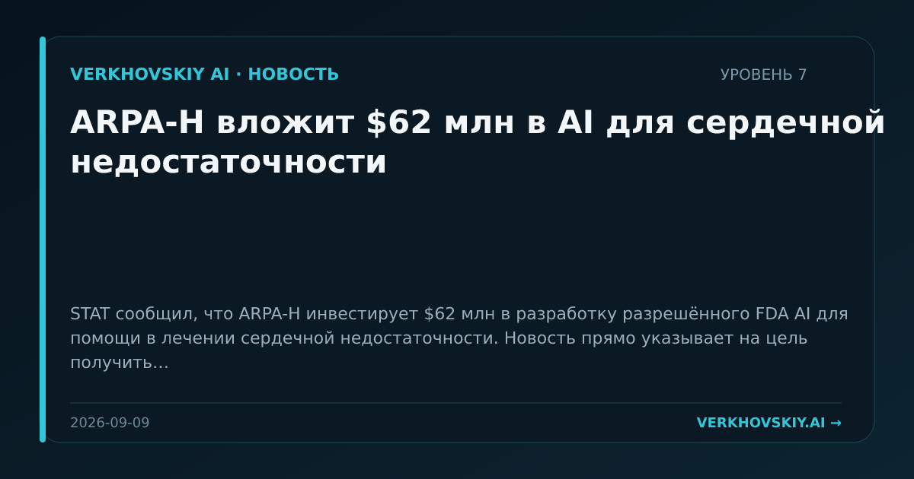

ARPA-H вложит $62 млн в AI для сердечной недостаточности
STAT сообщил, что ARPA-H инвестирует $62 млн в разработку разрешённого FDA AI для помощи в лечении сердечной недостаточности. Новость прямо указывает на цель получить FDA-авторизацию. Почему это важно: Государственное финансирование направляет AI к регулируемой клинической практике. Это связывает исследовательскую разработку с процедурой допуска медицинских технологий.